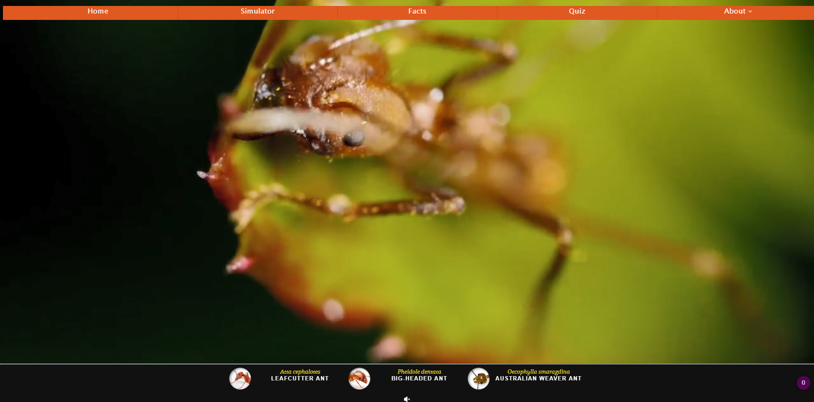
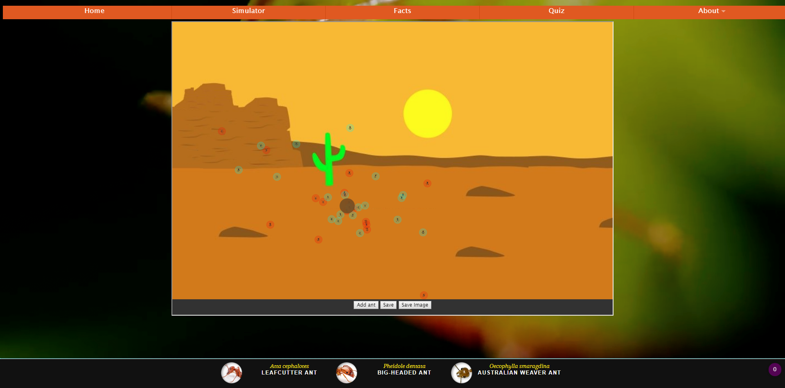
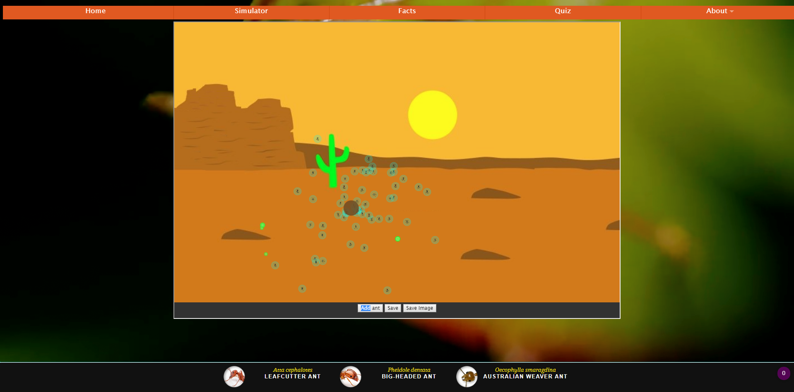
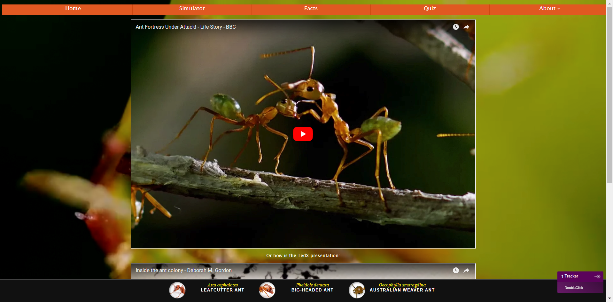
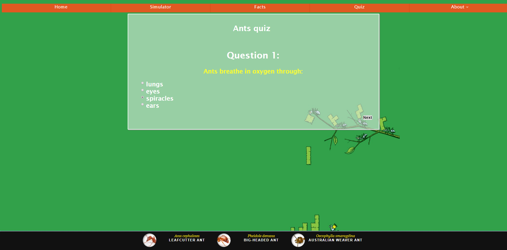
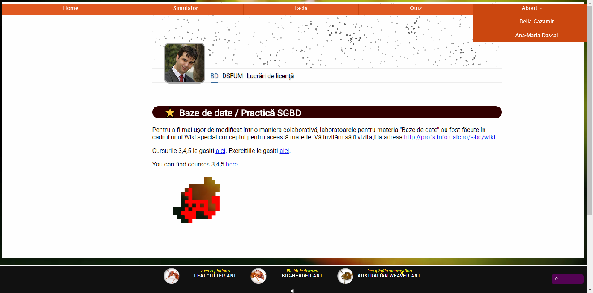

Antvior
Descriere
Site-ul web este folosit in scop educativ, cu ajutorul informatiilor disponibile poti invata lucruri interesante despre furnici.
Homepage-ul aplicatiei:
Accesarea site-ului/vizualizarea paginei "Home" .
Simultorul (cea mai importanta parte a aplicatiei):
Pornirea simulatorului, prin apasarea butonului din meniu "Simulation"
Inainte de adaugarea hranei
Dupa adaugarea hranei
Dupa ce gasesc hrana furnicile incep sa lase feromoni
Informatii despre furnici puteti gasi in "Facts":
Quiz-ul:
Am creat un quiz simpatic pentru a va testa cunostintele.
Pagina about:
Furnicile simpatice au mancat site-ul
